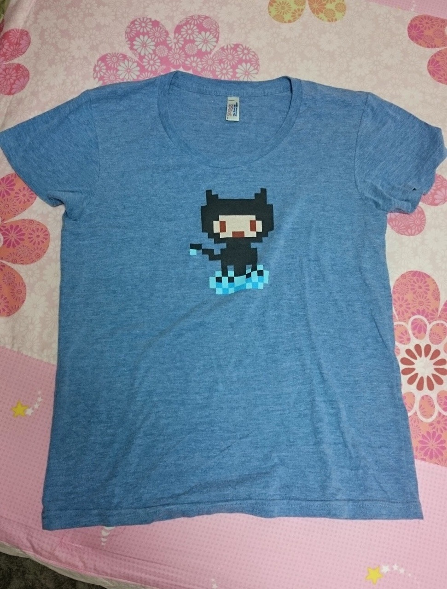
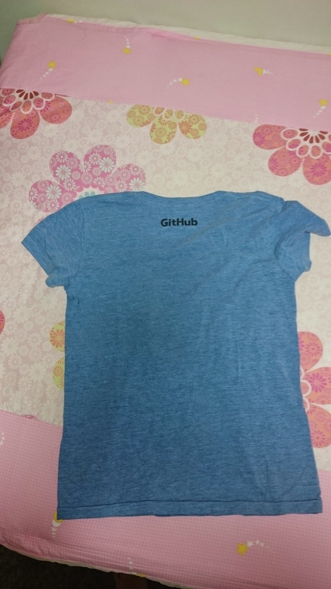
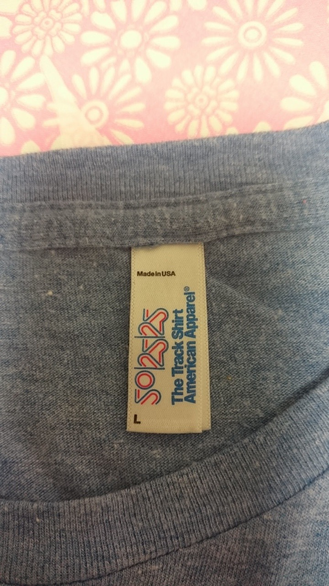
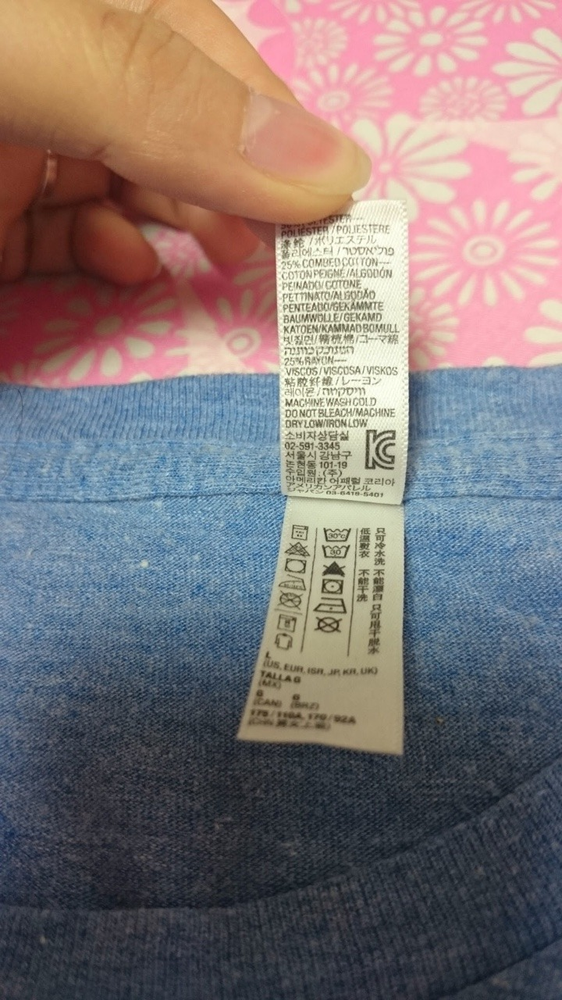
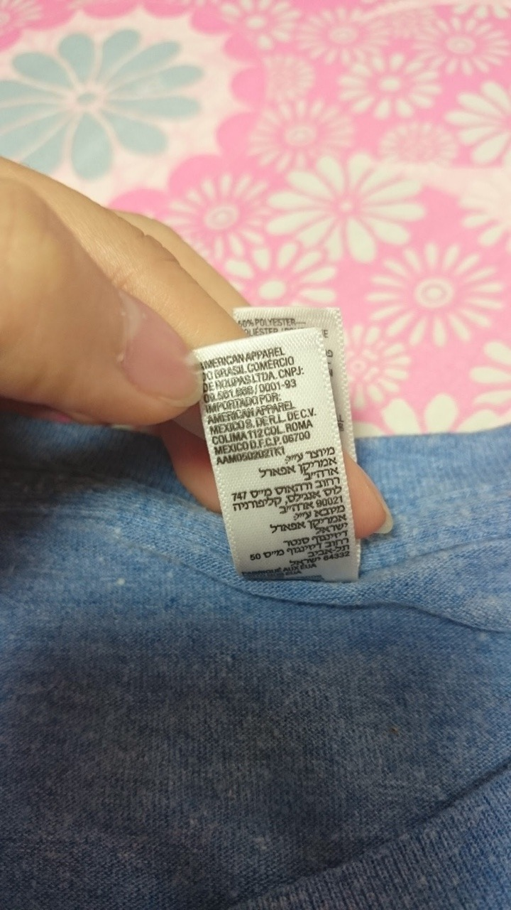

Github t-shirts
샌프란의 깃헙 사무실 탐방에 갔을 때 받았던 티셔츠. 여자 사이즈가 따로 있어서 L로 신청했다. 딱 적당히 헐렁함. 전부인지는 모르겠지만 아메리칸 어패럴 정품이다.
앞에 깃헙 옥토캣 인형으로 만들면 잘 팔릴 듯. 재질은 한여름에 입기 딱 좋은 부들부들한 면이다. 앞면 프린트와 뒷면 프린트는 딱 좋은 크기. 많은 고민을 했을듯 하다. 그냥 막 했다면 … 운이 좋군. 프린트가 자수였다면 ( 사실 저정도 두께의 천에는 불가능하지만) 더 좋았을텐데 그러려면 크기가 줄었겠지.
재질 4/5
디자인 4/5
총평 4/5
1점이 깎인 이유는 뭐랄까. 너무 완벽해서?? ㅋ라기보다. 여름용이긴 하지만 금방 구멍날꺼같다 ㅠ